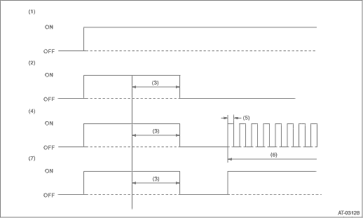

NOTE:
When any item is malfunctioning, the power indicator light blinks from the time the malfunction is detected after starting the engine until the ignition switch is turned OFF. The malfunctioning part or unit can be determined by a DTC during the on-board diagnostics operation. Problems which occurred previously can also be identified through the memory function. If the power indicator light does not show a problem (although a problem is occurring), the problem can be determined by checking the performance characteristics of each sensor using the Subaru Select Monitor. Indicator light signal patterns are as shown in the figure.

|
(1) |
Ignition switch (engine OFF) |
(4) |
Abnormal (Trouble occurs) |
(6) |
Blink |
|
(2) |
Normal |
(5) |
0.25 seconds |
(7) |
Normal (Power switch ON) |
|
(3) |
2 seconds |
Perform the inspection when the power indicator light does not operate correctly.